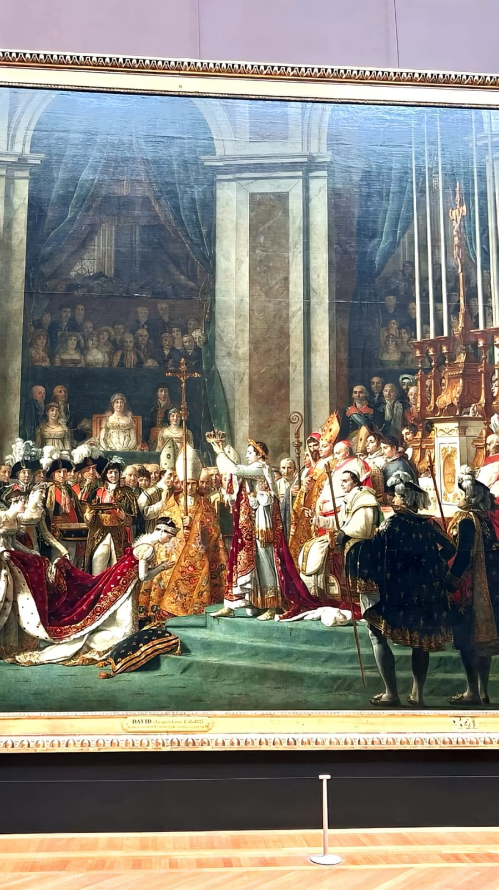

Museum Seni Louvre
Selamat datang di platform Museum Seni Louvre! Temukan keindahan dan inspirasi dalam karya-karya seni yang dipamerkan di museum kami.
Tahukah Kamu?

Koleksi Karya Museum Seni Louvre
Lukisan Mona Lisa

Patung Venus de Milo
